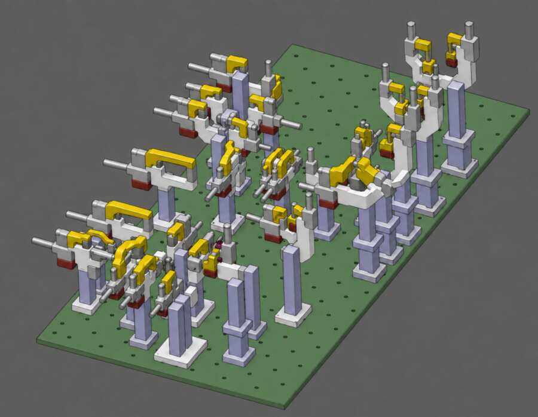
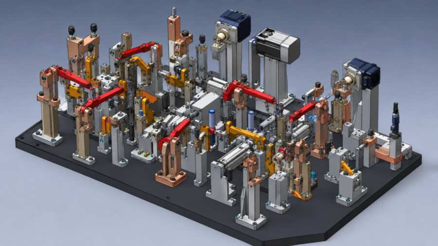
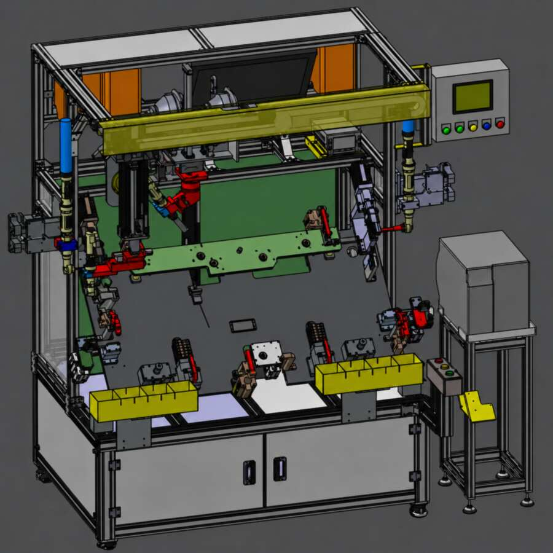
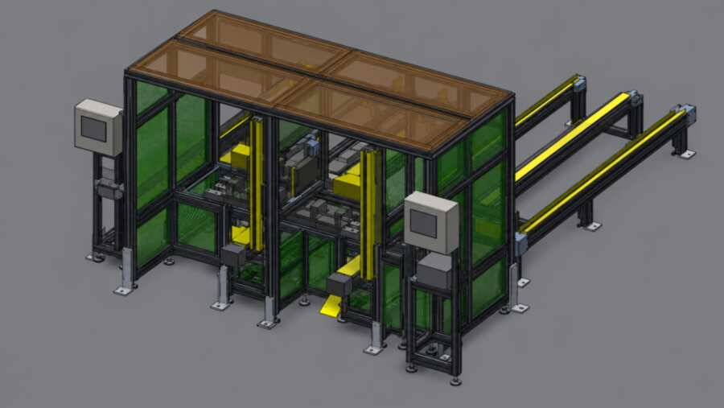
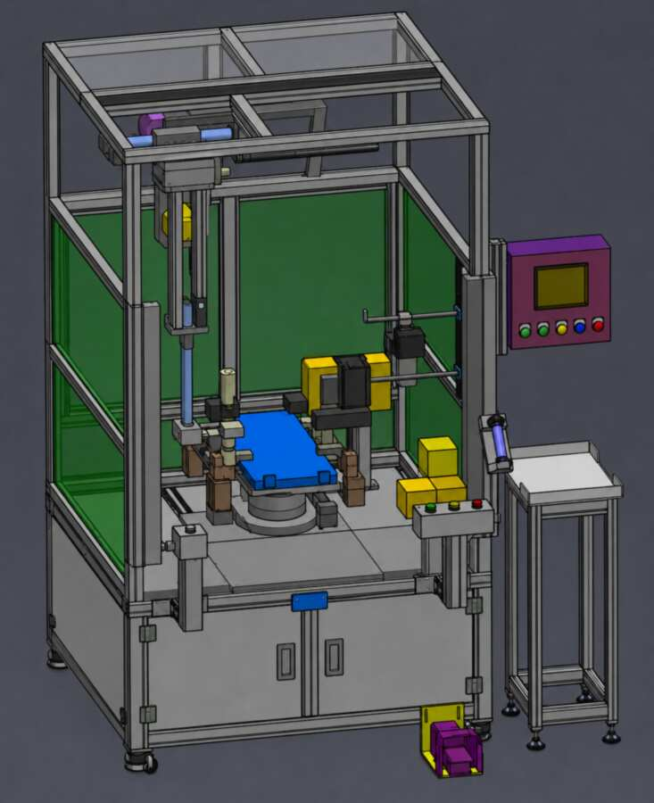
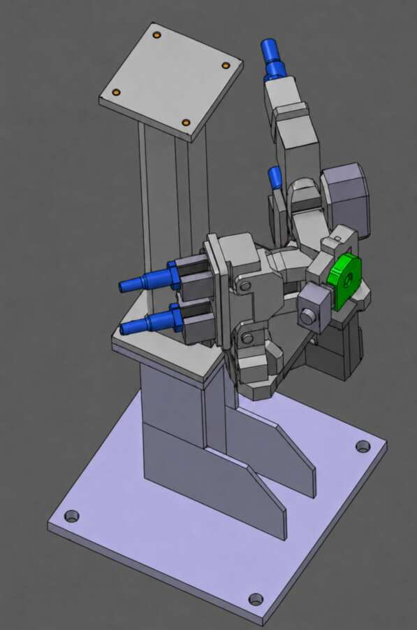

차체 용접지그
차체 워크의 기준과 고정 조건을 바탕으로 Locator·Clamp 및 지지 구조를 구현한 프로젝트입니다.
고객사·차종·상세도면 비공개고객과 프로젝트의 보안을 존중하며, 공개 가능한 범위에서 프로젝트 분야와 검토 내용을 소개합니다.
프로젝트 이미지는 디자인 유출 및 자료 보안을 위해 실제 작업 원본 대신, 설비의 용도와 구조에 대한 이해를 돕도록 세부 형상을 단순화한 참고 이미지로 제공합니다.

차체 워크의 기준과 고정 조건을 바탕으로 Locator·Clamp 및 지지 구조를 구현한 프로젝트입니다.
고객사·차종·상세도면 비공개
시트 부품의 안착과 위치 결정, 고정 조건 및 용접 작업성을 고려한 프로젝트 사례입니다.
고객사·제품·상세도면 비공개
워크의 자세 전환 조건에 맞춰 틸팅 구동 구조와 지지 방식을 구현한 프로젝트입니다.
고객·공정·상세도면 비공개
워크 또는 설비 유닛의 이동 조건에 맞춰 슬라이드 구조와 정지 위치를 구현한 프로젝트입니다.
고객·공정·상세도면 비공개
공정 전환과 조립 작업 조건을 바탕으로 턴테이블과 워크 안착 구조를 구현한 프로젝트입니다.
고객·공정·상세도면 비공개
워크 취급 조건에 맞는 로봇 핸드와 거치·교환용 스탠드의 구조를 검토한 프로젝트 사례입니다.
워크·공정·상세도면 비공개공개되지 않은 수행 범위는 프로젝트 상담 과정에서 안내드릴 수 있습니다.